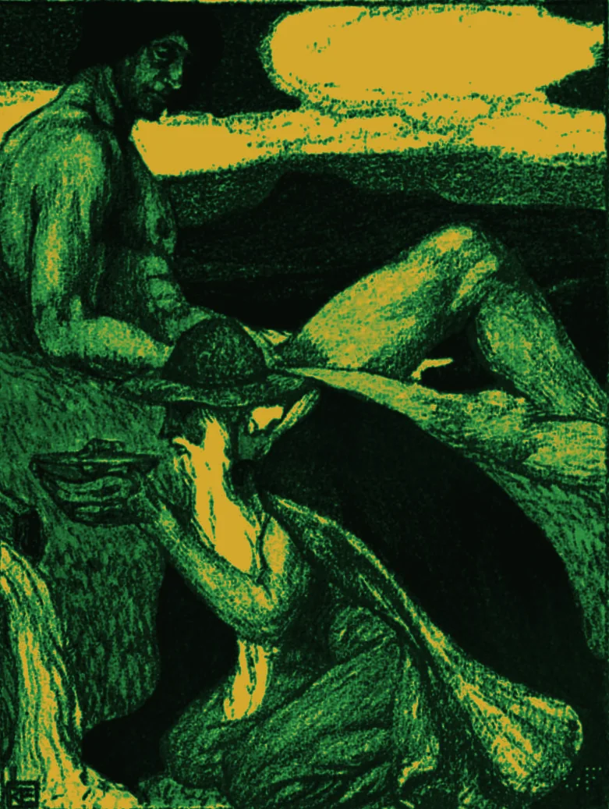

{kind=link}
ᛞ It answers
Ask anything and get a real explanation — intuition first, then mechanics, then a worked example, then a checkpoint question to prove you followed. Seven teaching modes, switchable mid-sentence.
A study companion that lives on your machine. It knows what you have read, remembers where you struggled, and tells you what to revise tonight — without a single byte leaving your computer.
Free and open source · No account · No API keys · Works offline

Most study tools ask you to organise first and learn later. Mimir works the other way round: talk to it like a tutor, and it quietly builds the structure underneath — what you covered, what you failed, what is due for review, and how far your grade has drifted since last week.
Ask anything and get a real explanation — intuition first, then mechanics, then a worked example, then a checkpoint question to prove you followed. Seven teaching modes, switchable mid-sentence.
Vector search and keyword ranking are fused so a question tonight can surface a page you uploaded a month ago. Old sessions are compressed nightly into durable memory rather than dropped.
Multiple choice, written answers marked against a scheme, flashcard decks, and timed mock exams. Every result feeds an SM-2 spaced repetition schedule.
Per-topic confidence, learning velocity, a study heatmap, and a predicted grade from score trajectory and forgetting-curve decay. Topics you keep failing get surfaced, not buried.
The language model is served by Ollama on your own hardware. Conversations live in SQLite on your disk. Semantic memory is an embedded ChromaDB directory. There is no server to sign in to, because there is no server.
The one feature that reaches the network is web search — and it ships switched off, behind a toggle you press yourself.
| Your notes and PDFs | Nothing |
| Your conversations | Nothing |
| Quiz scores, grades | Nothing |
| Usage analytics | None collected |
| Web search (if you enable it) | Your query |
| Update check | Version number |
In Norse myth, Mimir guards the well beneath Yggdrasil — the source of all wisdom. Odin gave up an eye for a single drink from it.